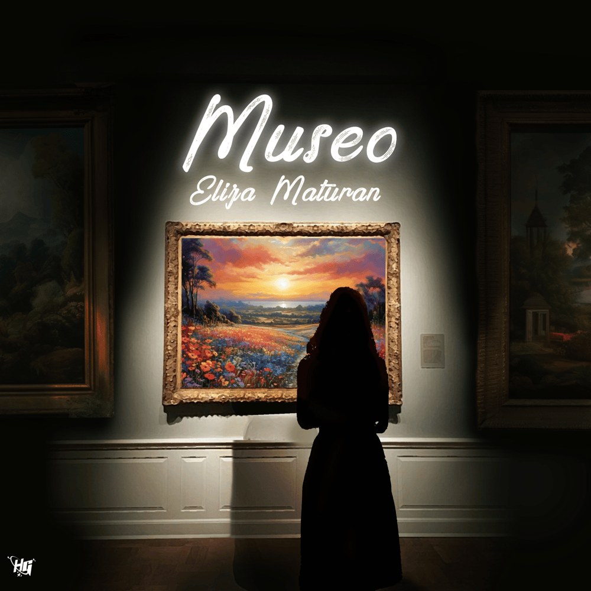

<!DOCTYPE html>
<html></html>
<head>
    <meta name="viewport" content="width=device-width, initial-scale=1">
    <title>
        Museo By Eliza Maturan
    </title>
</head>
<body>
<header>
    <div style="margin-left: 5px;">
            <h2> Tricia Mae Caringal</h2>
        </div>
        <div>
            <ul>
            <li><a href="Intro.html" target="_self">Home</a></li>
            <li><a href="mybio.html" target="_self">Profile</a></li>
            <li><a href="lyrics.html" target="_self">Song Lyrics</a></li> 
           </ul>
        </div>
        </div>
    </header>
    
    <body style="background: url('01.jpg') no-repeat center center; background-size: cover;"></body>
       <div>
        <h3><p style="margin: 1rem; padding: auto; padding-top: 1rem; text-align: center; font-family: 'Tiny Font', Courier, monospace; font-weight: bold;">
            Museo By Eliza Maturan
        </p></h3>
            <p style="text-align: center; font-weight: bold;">
                Ilang oras na akong andito <br>
                Umuwi na nga ang tropa ko <br>
                Sino ba naman kasing mag-aakala <br>
                Sa larawan ay matutulala?
            </p>
            <p style="text-align: center; font-weight: bold;">
                Sa likod ng tanawin <br>
                Tila may tumatawag sa 'kin <br>
                'Di ko na namalayan <br>
                Papalapit na pala'ng hakbang
            </p>
            <p style="text-align: center; font-weight: bold;">
                'Di ko maiwasang pagmasdan ang 'yong larawan <br>
                Kahit 'di mo mamalayan, ikaw lang ang gustong tignan <br>
                'Di ko man masabi, kahit na 'di maaari <br>
                Puwede ba 'kong manatili? Ikaw lang ang gustong pagmasdan
            </p>
            <p style="text-align: center; font-weight: bold;">
                Tinatawag ako ng 'yong anino <br>
                Naririnig ko rin ang boses mo <br>
                Hindi na nga nila ako maunawaan <br>
                Nababaliw na raw sa simpleng larawan
            </p>
            <p style="text-align: center;font-weight: bold;">
                Maaari bang <br>
                Manatili na lang sa museong ito? <br>
                'Di ko na namalayan <br>
                Biglang ayoko na lang lumisan
            </p>
            <p style="text-align: center;font-weight: bold;">
                'Di ko maiwasang pagmasdan ang 'yong larawan <br>
                Kahit 'di mo mamalayan, ikaw lang ang gustong tignan <br>
                'Di ko man masabi, kahit na 'di maaari <br>
                Puwede ba 'kong manatili? Ikaw lang ang gustong pagmasdan
            </p>
            <p style="text-align: center;font-weight: bold;">
                Kay sarap pagmasdan <br>
                Kahit na ilang araw, taon, at buwan <br>
                Hindi man maintindihan ng iba <br>
                Tila ako'y nakaramdam ng mahika
            </p>    
            <p style="text-align: center;font-weight: bold;">
                'Di ko maiwasang pagmasdan ang 'yong larawan <br>
                Kahit 'di mo mamalayan, ikaw lang ang gustong tignan <br>
                'Di ko man masabi, kahit na 'di maaari <br>
                Puwede ba 'kong manatili? Ikaw lang ang gustong pagmasdan
            </p>
            </div>
        </div>
    </body>